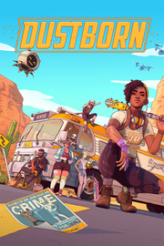

Dustborn
Detalles
|  | |
| Tiempo de juego | No Jugado |
| Última actividad | Nunca |
| Añadido | 11/13/2024 0:35:38 |
| Modificado | 11/13/2024 1:09:12 |
| Estado de finalización | No Jugado |
| Librería | Playnite |
| Fuente | PORCHE |
| Plataforma | PC (Windows) |
| Fecha de lanzamiento | 8/20/2024 |
| Puntuación de la Comunidad | 65 |
| Puntuación de la Crítica | 67 |
| Puntuación de usuario | |
| Género | Acción Aventura Indie |
| Desarrollador | Red Thread Games |
| Editor | Spotlight by Quantic Dream |
| Característica | Cloud Saves Compat. Total Con Mando Logros De Préstamo Familiar Un Jugador |
| Enlaces | Punto de encuentro Discusiones Guías Noticias Página de la tienda PCGamingWiki Logros |
| Tag | Acción Acción y aventura Aventura Buena trama Ciberpunk Coloridos Cómics Distopías Exploración Futuristas Historia alternativa Indie Las elecciones importan LGBTQ+ Mitos y leyendas Posapocalípticos Protagonista femenina Superhéroes Tercera persona Un jugador |
Descripción
Dustborn es un videojuego de acción y aventura para un jugador sobre la esperanza, el amor, la amistad, los robots... y el poder de las palabras.
Te pones en la piel de Pax, una «anómala» exiliada y estafadora con la habilidad de usar las palabras como arma. Con la intención de dejar atrás su pasado y empezar de cero, ha aceptado un trabajo que consiste en llevar un valioso paquete desde Pacifica a Nova Scotia, por lo que tendrá que cruzar todo el territorio de la República de América, que está bajo el control de Justice. Es razón suficiente como para emprender un viaje por carretera, ¿no?
¡Pues haz las maletas, reúne a una pandilla con habilidades extraordinarias y que comience la aventura por todo el país!
Explora los impresionantes paisajes de una versión alternativa de los Estados Unidos mientras viajas en un autobús conducido por un robot. Haz altos en el camino para reclutar a más miembros para la pandilla, mejorar tus relaciones, completar encargos y enfrentarte a retos cada vez más desafiantes. Ahora bien, las personas a las que les has robado el paquete quieren recuperarlo, y Justice no piensa ponértelo fácil, así que mejor que no te olvides de tu bate de béisbol.
Ah, por cierto, os haréis pasar por una banda de punk rock para proteger vuestras identidades, así que también habrá que ir ensayando para vuestro próximo concierto.
La salvación reside al final del camino, pero para llegar a ella hay que cruzar un país entero, y no uno pequeño.
EL PODER DE LAS PALABRAS

Las palabras son poderosas, pero poderosas de verdad. Lucha usando Gritos y manipula a la gente con Elocuencia, lo que te permitirá escapar de situaciones difíciles. Crea palabras nuevas y aprende a usar todo tu arsenal lingüístico contra tus enemigos... y amigos.
UN VIAJE POR CARRETERA POR UN PAÍS DIVIDIDO

Te embarcarás en un viaje por carretera por una versión alternativa de los Estados Unidos, harás paradas en lugares emblemáticos, completarás encargos inesperados, conocerás a una gran variedad de personajes, reunirás a nuevos miembros para tu pandilla y te enfrentarás (o evitarás) a los enemigos que te persiguen. Este viaje te permitirá contemplar paisajes asombrosos, repletos de color y con un estilo de novela gráfica que lleva al 3D las impresionantes ilustraciones en 2D.
UN ELENCO DE PERSONAJES DIVERSO

Tu pandilla será la familia a la que elijas. De ti dependerá reunir, dirigir y confiar en un grupo que te cubra las espaldas. Esta diversa pandilla de marginados cuenta con miembros con toda clase de habilidades, interesantes historias y personalidades contrapuestas. Tus decisiones en los diálogos irán dando forma a las relaciones entre ellos y cambiarán su opinión sobre sí mismos y los demás.
UNA JUGABILIDAD TAN VARIADA COMO EL PAISAJE

En cada zona explorarás, investigarás y entablarás conversaciones con nuevos personajes. Además, contarás con tu pandilla para superar desafíos, crearás nuevas palabras para los Gritos y la Elocuencia y ensayarás con tu banda. También cabe la posibilidad de que acabes lanzando cócteles molotov desde una moto, tires abajo helicópteros con un bate de beisbol y... muchas otras cosas. Ya sabes, las cosillas del día a día.